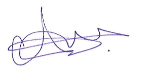

Abdi Abdirashid

Stallikerstrasse 5a
8906 Bonstetten
Motivationsschreiben
Sehr geehrte Damen und Herren,
ich stamme aus der kleinen Stadt El Bur im Süden Somalias, einem Ort voller Geschichten und Herausforderungen, die meinen Lebensweg geprägt haben.. Aufgrund der Konflikte in meinem Heimatland musste meine Familie oft umziehen, wodurch ich mich immer wieder an neue Schulsysteme und Umgebungen anpassen musste. Diese Herausforderungen haben mir wertvolle kulturelle Kenntnisse und eine hohe Anpassungsfähigkeit vermittelt. Ich habe in mehreren afrikanischen Ländern gelebt, darunter Kenia, Tansania und Äthiopien, was meine Fähigkeit, mich schnell auf neue Gegebenheiten einzustellen, nachhaltig geprägt hat. Im Alter von 15 Jahren zog ich in die Schweiz, nachdem mein Onkel in Grossbritannien unsere Familie finanziell nicht mehr unterstützen konnte. Die Eingewöhnung in der Schweiz fiel mir leicht, und ich legte meinen Fokus darauf, die Sprache schnell zu erlernen, da dies eine meiner besonderen Stärken ist.
Ich bin gelernter Unterhaltspraktiker und habe meine Ausbildung im Schulhaus Kirchbühl in der Gemeinde Cham erfolgreich abgeschlossen. Während meiner Ausbildung habe ich vielfältige Tätigkeiten ausgeführt, wie das Saugen und Nassaufnehmen in Klassenzimmern, die tägliche Rundgangskontrolle sowie das Reinigen des Treppenhauses. Besonders gerne habe ich die Grundreinigungen durchgeführt, bei denen Sorgfalt und Effizienz gefragt waren. Zusätzlich habe ich in verschiedenen Bereichen gearbeitet, darunter als Hauswart, Reinigungskraft, Produktionsmitarbeiter bei V-ZUG, Baustellenaushilfe, Autotransporteur und Zimmermann. Diese Einsätze über Temporärbüros haben mir wertvolle Erfahrungen eingebracht und meine Anpassungsfähigkeit sowie Vielseitigkeit gestärkt.
Ich sehe meine grössten Stärken in meiner Zuverlässigkeit, meiner exakten und konzentrierten Arbeitsweise sowie meiner schnellen Auffassungsgabe. Ich bin ein flexibler, offener Mensch, der gerne Verantwortung übernimmt und sowohl eigenständig als auch im Team effektiv arbeitet. Besonders schätze ich eine positive Arbeitsumgebung, in der Zusammenarbeit und gegenseitige Unterstützung im Mittelpunkt stehen.
Nach einer Reise im Jahr 2023, bei der ich nach langer Zeit meine Familie wiedersehen konnte, bin ich nun bereit, eine langfristige und unbefristete Tätigkeit aufzunehmen. Meine Leidenschaft für den Bereich Betriebsunterhalt sowie meine gesammelten Erfahrungen und Fähigkeiten möchte ich gerne in Ihre Organisation einbringen.
Ich freue mich darauf, Sie in einem persönlichen Gespräch von meiner Eignung zu überzeugen und bin auch bereit, meine Fähigkeiten bei einem Probetag unter Beweis zu stellen. Vielen Dank für Ihre Zeit und Ihre Prüfung meiner Unterlagen.
Freundliche Grüsse,,

Abdi Abdirashid